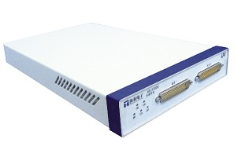

32路SPDT通用开关

产品简介
□产品型号：HTLX2913
□产品名称：32路SPDT通用开关
□HTLX2913是基于LXI总线1.3标准的32路SPDT通用开关模块
□硬件电路主要由LXI接口模块和继电器及驱动模块组成。主要应用于测试及控制系统中，为各路功率信号提供分配通道，以及功率信号在不同回路中的切换
□它能单独对其中的一个通道或部分通道进行关断切换控制，也可同时对32个通道进行关断切换控制
功能特性
□HTLX2913具有C类LXI接口、10M/100M以太网接口、全功能图形化Web界面，可实现网速自适应、自动交叉线调整等功能
□整个产品由以下4个部分组成:接口电路,功能电路,电源,机箱结构
□机箱的前面板采用两个DB50公头针式插件,为用户提供32路测试接口输出CH1-CH16（Ⅰ）和CH17-CH32（Ⅱ）
□
应用行业
□ 主要应用于各种LXI测试及控制系统中
□ 为各种大功率信号分配通道，使大功率信号在不同回路中进行切换,将HTLX2913通过网线与上位机连接即可通过上位机对其中的通道进行关断切换控制。